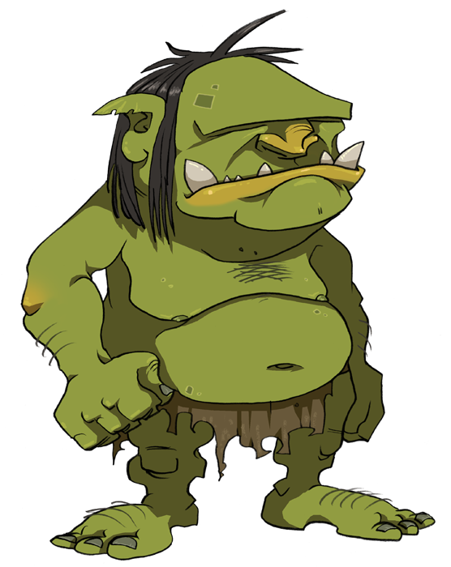
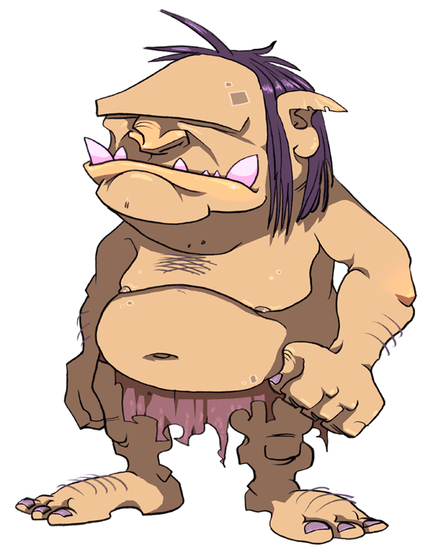

Beat the Ogre
Test Driven
Development


the eternal
struggle
in the name of laziness
Developer
less effort to pass the test
vs
UnitTester
less effort to derail the code
...with one target called
Quality
Internal
maintainability
+
External
reliability
issue
“we need a component matching dates with wildcard on month and year”
19 12 2012: 'Beat The Ogre' 11 09: 'Happy Birthday to Me' 13: 'Repair the Sword'
Let's go
1st test + 1st solution
we need a box that takes three numbers
# test.py
import unittest
import datetime
from pattern import DatePattern
class DatePatternTestCase(unittest.TestCase):
def test_match(self):
p = DatePattern(19, 5, 2012)
d = datetime.date(2012, 5, 19)
self.assertTrue(p.matches(d))
if __name__ == '__main__':
unittest.main()
and it returns the match with a given date
two goals
# pattern.py
class DatePattern:
def __init__(self, day, month, year):
pass
def matches(self, date):
return True
signatures
equality of dates
Let's boom
drive our lazy programmer to write a little more code
# test.py
...
def test_match_error(self):
p = DatePattern(19, 5, 2012)
d = datetime.date(2012, 5, 20)
self.assertFalse(p.matches(d))
...
“After all... tomorrow is another day”
# pattern.py
import datetime
class DatePattern:
def __init__(self, day, month, year):
self.date = datetime.date(year, month, day)
def matches(self, date):
return self.date == date
1.0
# test.py
...
def test_match_wild_year(self):
p = DatePattern(19, 5)
d = datetime.date(2012, 5, 19)
self.assertTrue(p.matches(d))
def test_match_wild_month(self):
p = DatePattern(19)
d = datetime.date(2012, 5, 19)
self.assertTrue(p.matches(d))
...
# pattern.py
class DatePattern:
def __init__(self, day, month=None, year=None):
self.day = day
self.month = month
self.year = year
def matches(self, date):
return (
(self.year and
self.year == date.year or
True) and
(self.month and
self.month == date.month or
True) and
self.day == date.day
)
The Ogre
is born, but...
...it's release time!
1.1
New Requirement
the cheap shot
'Saturday': 'Clean the Swamp'
# test.py
...
def test_match_weekday(self):
p = DatePattern(weekday=5) # 5 is Saturday
d = datetime.date(2012, 5, 19)
self.assertTrue(p.matches(d))
...
# pattern.py
class DatePattern:
def __init__(self, day=None, month=None, year=None, weekday=None):
self.day = day
self.month = month
self.year = year
self.weekday = weekday
def matches(self, date):
return (
(self.year and
self.year == date.year or
True) and
(self.month and
self.month == date.month or
True) and
(self.day and
self.day == date.day or
True) and
(self.weekday and
self.weekday == date.weekday() or
True)
)
the trick is known, isn't it?
FAIL
...and it's difficult to debug too!
# pattern.py
class DatePattern:
def __init__(self, day=None, month=None, year=None, weekday=None):
self.day = day
self.month = month
self.year = year
self.weekday = weekday
def matches(self, date):
return (
self.year_matches(date) and
self.month_matches(date) and
self.day_matches(date) and
self.weekday_matches(date)
)
def year_matches(self, date):
if not self.year: return True
return self.year == date.year
def month_matches(self, date):
if not self.month: return True
return self.month == date.month
def day_matches(self, date):
if not self.day: return True
return self.day == date.day
def weekday_matches(self, date):
if not self.weekday: return True
return self.weekday == date.weekday()
it's awful
but this refactoring
reminds me a weapon to
beat the ogre
Design
Patterns
2.0
the fame
'Last Saturday': 'Clean the Swamp, REALLY!!!' 'Third Monday': 'Pay Taxes' 'Last Day of the Month': 'Check Fees'
A New Design Emerges
“A COMPOSITE is basically an object that contains other objects, where both the composite object and its contained objects all implement the same interface. Using the interface on the composite should invoke the same methods on all of the contained objects without forcing the external client to do so explicitly“

# test.py
import unittest
import datetime
from pattern import *
class DatePatternTestCase(unittest.TestCase):
def setUp(self):
self.pattern = DatePattern()
self.date = datetime.date(2012, 5, 19)
def test_match(self):
self.pattern.add(DayPattern(19))
self.pattern.add(MonthPattern(5))
self.pattern.add(YearPattern(2012))
self.assertTrue(self.pattern.matches(self.date))
def test_match_error(self):
self.pattern.add(DayPattern(19))
self.pattern.add(MonthPattern(5))
self.pattern.add(YearPattern(2012))
d = datetime.date(2012, 5, 20)
self.assertFalse(self.pattern.matches(d))
def test_match_wild_year(self):
self.pattern.add(DayPattern(19))
self.pattern.add(MonthPattern(5))
self.assertTrue(self.pattern.matches(self.date))
def test_match_wild_month(self):
self.pattern.add(DayPattern(19))
self.assertTrue(self.pattern.matches(self.date))
def test_match_weekday(self):
self.pattern.add(WeekdayPattern(5))
self.assertTrue(self.pattern.matches(self.date))
# test.py
class YearPatternTests(unittest.TestCase):
def setUp(self):
self.date = datetime.date(2012, 5, 19)
def testYearMatches(self):
p = YearPattern(2012)
self.assertTrue(p.matches(self.date))
def testYearDoesNotMatch(self):
p = YearPattern(2003)
self.assertFalse(p.matches(self.date))
# pattern.py
class DatePattern:
def __init__(self):
self.patterns = []
def add(self, pattern):
self.patterns.append(pattern)
def matches(self, date):
for pattern in self.patterns:
if not pattern.matches(date):
return False
return True
class YearPattern:
def __init__(self, year):
self.year = year
def matches(self, date):
return self.year == date.year
...
Finally, we beat the ogre
Another brick in the wall
# pattern.py
...
class LastWeekdayPattern(WeekdayPattern):
def matches(self, date):
return (
super(LastWeekdayPattern, self).matches(date) and
(date + datetime.timedelta(7)).month != date.month
)
class NthWeekdayPattern(WeekdayPattern):
def __init__(self, n, weekday):
super(NthWeekdayPattern, self).__init__(weekday)
self.n = n
def matches(self, date):
return (
super(NthWeekdayPattern, self).matches(date) and
self.n == self.get_weekday_number(date)
)
@staticmethod
def get_weekday_number(date):
n = 1
while True:
previousDate = date - datetime.timedelta(7 * n)
if previousDate.month == date.month:
n += 1
else:
return n
class LastDayInMonthPattern(object):
def matches(self, date):
return (date + datetime.timedelta(1)).month != date.month
...
2.X
stable interface
+
solid test base
no fear
And They Lived Happily Ever After!
Credits
an impress.js presentation by Andrea de Marco
Inspiring Tutorial by Jason Diamond
Inspiring Template by John Polacek
Open Sans Font by Steve Matteson
impress.js created by Bartek Szopka